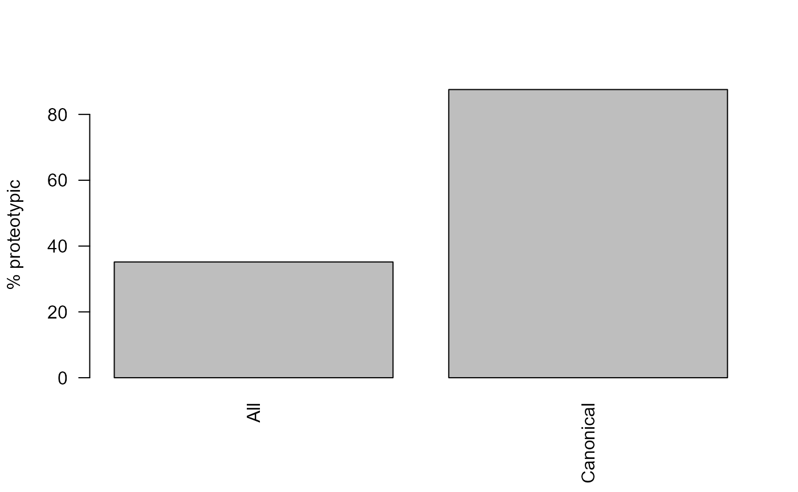

Peptide Annotation and Protein Inference
Witold Wolski
March 16, 2017
Source:../vignettes/PeptideAnnotationwithProzor.Rmd
PeptideAnnotationwithProzor.RmdIntroduction
This Vignette describes how the prozor::greedy function can be used to infer proteins form peptide identifications using the Occam’s razor principle. The method tries to find a minimal set of porteins which can explain all the peptides identified.
library(prozor)
rm(list = ls())
file = system.file("extdata/IDResults.txt.gz" , package = "prozor")
specMeta <- readr::read_tsv(file)
head(specMeta)## # A tibble: 6 x 12
## RefSpectraId numPeaks peptideSeq precursorCharge precursorMZ retentionTime
## <dbl> <dbl> <chr> <dbl> <dbl> <dbl>
## 1 9908 57 GPDVLTATVSGK 2 573. 73.6
## 2 36028 70 VPQVSTPTLVEVSR 3 505. 93.3
## 3 74786 177 EVQLVETGGGLIQ~ 3 637. 121.
## 4 53362 184 AQPVQVAEGSEPD~ 3 758. 129.
## 5 48668 157 KYLYEIAR 2 528. 69.8
## 6 90153 158 AQLVPLPPSTYVE~ 3 860. 137.
## # ... with 6 more variables: copies <dbl>, peptideModSeq <chr>, score <dbl>,
## # lengthPepSeq <dbl>, fileName <dbl>, SpecIDinFile <dbl>Annotate peptide sequences with protein sequences from two fasta files on with reviewed entries only (sp) and the other with reviewed and Trembl entries (sp/tr).
## [1] 1520
upeptide <- unique(specMeta$peptideSeq)
resAll <-
prozor::readPeptideFasta(
system.file("p1000_db1_example/Annotation_allSeq.fasta.gz" , package = "prozor"))
resCan <-
prozor::readPeptideFasta(
system.file("p1000_db1_example/Annotation_canSeq.fasta.gz" , package = "prozor"))
annotAll <- prozor::annotatePeptides(upeptide, resAll)## Warning: `funs()` was deprecated in dplyr 0.8.0.
## Please use a list of either functions or lambdas:
##
## # Simple named list:
## list(mean = mean, median = median)
##
## # Auto named with `tibble::lst()`:
## tibble::lst(mean, median)
##
## # Using lambdas
## list(~ mean(., trim = .2), ~ median(., na.rm = TRUE))
## This warning is displayed once every 8 hours.
## Call `lifecycle::last_lifecycle_warnings()` to see where this warning was generated.## peptideSeq proteinID Offset matched
## 1 AACAQLNDFLQEYGTQGCQV sp|P0C0L4-2|CO4A_HUMAN 1679 TRUE
## 2 AACAQLNDFLQEYGTQGCQV tr|A0A140TA49|A0A140TA49_HUMAN 1679 TRUE
## 3 AACAQLNDFLQEYGTQGCQV tr|A0A140TA29|A0A140TA29_HUMAN 1679 TRUE
## 4 AACAQLNDFLQEYGTQGCQV tr|F5GXS0|F5GXS0_HUMAN 1679 TRUE
## 5 AACAQLNDFLQEYGTQGCQV tr|A0A140TA44|A0A140TA44_HUMAN 1679 TRUE
## 6 AACAQLNDFLQEYGTQGCQV tr|A0A0G2JPR0|A0A0G2JPR0_HUMAN 1725 TRUE
## lengthPeptide
## 1 20
## 2 20
## 3 20
## 4 20
## 5 20
## 6 20
annotCan <- prozor::annotatePeptides(upeptide, resCan)
barplot(c(All = length(resAll),Canonical = length(resCan)))Number of proteins in the All and Canonical database.
Number of unique peptide protein pairs for the All and Canonical database.
We can see that using the larger fasta database reduces the proportion of proteotypic peptides.
PCProteotypic_all <-
sum(table(annotAll$peptideSeq) == 1) / length(table(annotAll$peptideSeq)) * 100
PCProteotypic_canonical <-
sum(table(annotCan$peptideSeq) == 1) / length(table(annotCan$peptideSeq)) * 100
barplot(
c(All = PCProteotypic_all, Canonical = PCProteotypic_canonical),
las = 2,
ylab = "% proteotypic"
)
Protein Inference
We can now identify a minmal set of proteins explaining all the peptides observed for both databases
library(Matrix)
precursors <-
unique(subset(specMeta, select = c(
peptideModSeq, precursorCharge, peptideSeq
)))Protein Inference for database with Trembl identifiers
library(Matrix)
annotatedPrecursors <- merge(precursors ,
subset(annotAll, select = c(peptideSeq, proteinID)),
by.x = "peptideSeq",
by.y = "peptideSeq")
xx <-
prepareMatrix(annotatedPrecursors,
proteinID = "proteinID",
peptideID = "peptideSeq")
image(xx)
Peptide protein machtes for the All database. Rows - peptides, Columns - proteins, black - peptide protein match.
xxAll <- greedy(xx)Protein Inference for Reviewed/Canonical database
annotatedPrecursors <-
merge(precursors ,
subset(annotCan, select = c(peptideSeq, proteinID)),
by.x = "peptideSeq",
by.y = "peptideSeq")
xx <-
prepareMatrix(annotatedPrecursors ,
proteinID = "proteinID",
peptideID = "peptideSeq")
image(xx)Peptide protein machtes for the Canonical database. Rows - peptides, Columns - proteins, black - peptide protein match.
xxCAN <- greedy(xx)Conclusion
We see that the number of proteins needed to explain all the peptides is practically identical for both databases. Also in practice using a database with more entries does not lead to more identified proteins. On the contrary, it might even reduce the number of porteins identified.
barplot(c(All_before = length(unique(annotAll$proteinID)), All_after = length(unique(unlist(
xxAll
))) , Canonical_before = length(unique(annotCan$proteinID)), Canonical_after = length(unique(unlist(
xxCAN
)))))Number of proteins before and after protein inference.
Session Info
## R version 4.1.1 (2021-08-10)
## Platform: x86_64-w64-mingw32/x64 (64-bit)
## Running under: Windows 10 x64 (build 19044)
##
## Matrix products: default
##
## locale:
## [1] LC_COLLATE=English_United States.1252
## [2] LC_CTYPE=English_United States.1252
## [3] LC_MONETARY=English_United States.1252
## [4] LC_NUMERIC=C
## [5] LC_TIME=English_United States.1252
##
## attached base packages:
## [1] stats graphics grDevices utils datasets methods base
##
## other attached packages:
## [1] Matrix_1.3-4 prozor_0.3.0
##
## loaded via a namespace (and not attached):
## [1] tidyselect_1.1.1 xfun_0.26 bslib_0.3.1
## [4] purrr_0.3.4 lattice_0.20-44 vctrs_0.3.8
## [7] generics_0.1.1 htmltools_0.5.2 yaml_2.2.1
## [10] utf8_1.2.2 rlang_0.4.11 pkgdown_1.6.1
## [13] jquerylib_0.1.4 pillar_1.6.4 glue_1.4.2
## [16] DBI_1.1.1 bit64_4.0.5 lifecycle_1.0.1
## [19] stringr_1.4.0 AhoCorasickTrie_0.1.2 ragg_1.2.0
## [22] memoise_2.0.0 evaluate_0.14 knitr_1.36
## [25] tzdb_0.1.2 fastmap_1.1.0 parallel_4.1.1
## [28] fansi_0.5.0 highr_0.9 Rcpp_1.0.7
## [31] readr_2.0.1 cachem_1.0.6 desc_1.4.0
## [34] vroom_1.5.6 jsonlite_1.7.2 systemfonts_1.0.3
## [37] fs_1.5.0 bit_4.0.4 textshaping_0.3.6
## [40] hms_1.1.1 digest_0.6.28 stringi_1.7.4
## [43] dplyr_1.0.7 grid_4.1.1 ade4_1.7-18
## [46] rprojroot_2.0.2 cli_3.1.0 tools_4.1.1
## [49] magrittr_2.0.1 sass_0.4.0 tibble_3.1.4
## [52] crayon_1.4.2 seqinr_4.2-8 pkgconfig_2.0.3
## [55] docopt_0.7.1 MASS_7.3-54 ellipsis_0.3.2
## [58] assertthat_0.2.1 rmarkdown_2.11 R6_2.5.1
## [61] compiler_4.1.1